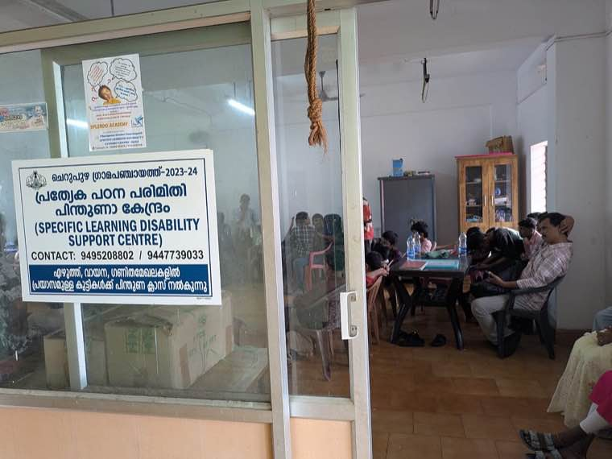
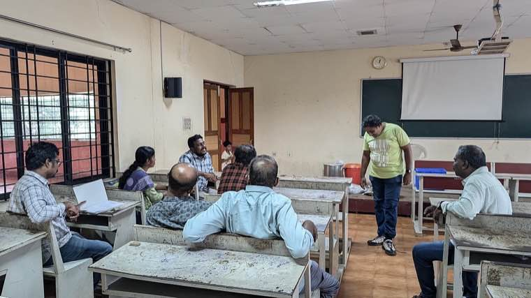
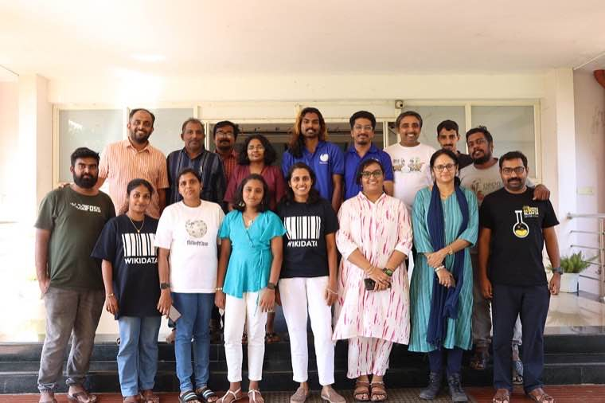

The story in brief
Oppam ("with you") is a deliberately low-tech grievance model. You send a message — by WhatsApp, in writing, or in person — and someone in the District Collector's office acknowledges within 24 hours, names an owner within 48, and closes the loop within 96. Most of the time, it just works.
When a citizen finds that her pension has been stopped without explanation, the worst outcome is silence. The Oppam model treats silence as the actual failure to be fixed — even more than the original problem.
By committing to four guarantees — acknowledgement, named owner, status visibility, and timed closure — Oppam made the system answer to its own promises, with a level of public visibility that made backsliding politically costly.
What changed for people
- A clear single window — WhatsApp number + in-person desk + written letters — all flow into the same queue.
- Every grievance gets an acknowledgement within 24 hours with a tracking ID and the named officer who will resolve it.
- Citizens can ask for status at any time, and weekly pendency reports are made public at the ward level.
- Departments that try to ping-pong cases between themselves are visible in the pendency dashboard — and lose.
The officer playbook
Overview
The Oppam model started in a single district and asked a hard question: do we actually need a new platform to fix grievance redressal, or do we need to fix the assumptions inside the existing one?
Their answer was to redesign the process, not the technology. A small Collector-led cell consolidated all citizen inputs into one queue, set four hard SLAs, made pendency transparent, and held a weekly cross-department review.
The result is a model that has since been adapted by other districts and departments — and that gives a clear lesson: when the politics of accountability are right, the technology stack required is surprisingly small.
Challenges
Inter-department ping-pong
Most grievances span more than one department. The default behaviour was to bounce the case sideways. Naming a single accountable owner per grievance broke the loop.
Volume without prioritisation
Without triage, urgent cases (medical, safety) get stuck behind paperwork queries. A simple three-tier severity tag fixed that.
Closure quality vs. closure count
Officers gamed early metrics by closing without resolving. A 30-day citizen call-back audit caught and corrected this.
Sustaining attention after the Collector moves on
Models built on personality fade. Codifying the SOP, dashboards and review cadence made the model survive transfers.
What was done
- Established a Collector-led grievance cell with full-time staff drawn from existing departments.
- Set four guarantees: 24-hour acknowledgement, 48-hour owner assignment, status-on-demand, 96-hour closure (with documented exceptions).
- Aggregated all input channels (WhatsApp, in-person, written, helpline) into a single queue with one tracking ID.
- Published weekly pendency dashboards at the ward level — with department-wise breakdowns.
- Instituted a weekly inter-department review chaired by the Collector to close systemic issues, not just individual cases.
- Added a 30-day citizen call-back audit on a random sample to prevent closure gaming.
Technology & systems
- WhatsApp Business account as primary citizen channel (no new software licences)
- Existing departmental email + a shared Google/Excel-based tracker as the queue
- Power BI / spreadsheet dashboards published weekly
- Helpline numbers integrated with the same tracker by call centre staff
- Photo evidence collected on the same WhatsApp thread
Outcomes
- Average grievance resolution time fell from 21 days to 96 hours.
- First-call closure rate reached 92% — most cases resolved without inter-department referral.
- Citizen satisfaction (measured on the 30-day audit) reached 87% "resolved and satisfactory".
- Three other districts have adopted the model with locally adapted SLAs.
- Capital expenditure: zero. The entire model runs on existing platforms and reassigned staff.
Process flow
1. Single window
WhatsApp + in-person + written + helpline all consolidate into one tracker with a single tracking ID.
2. Acknowledgement (24h)
Grievance cell acknowledges, classifies (severity + department), and confirms tracking ID.
3. Owner assignment (48h)
Single named officer becomes accountable; ping-pong is now visible and culturally costly.
4. Resolution (96h)
Owner closes the loop with the citizen; documented exceptions for genuinely longer cases.
5. Pendency dashboard
Weekly publication at ward / department level; review by Collector with department heads.
6. 30-day audit
Random call-back audit verifies actual citizen satisfaction; closure gaming corrected.
Replication toolkit
- Oppam cell job description and staffing template
- Four-guarantees SLA document and exception protocol
- Single-queue tracker schema (Excel / Google Sheets / Power BI)
- Weekly review meeting agenda and decision log template
- 30-day citizen call-back audit script and scoring rubric
- Communication kit: WhatsApp templates, posters, citizen FAQ
On the ground



How it unfolded
- Month 0
Diagnostic
Collector's office audits existing grievance flows — identifies that the bottleneck is process, not tech.
- Month 1
Pilot in one taluk
Four-guarantee SLA tested with full transparency; lessons captured weekly.
- Month 2
District roll-out
Model extended district-wide; departmental review cadence institutionalised.
- Month 6
First call closure crosses 90%
Audit shows actual citizen satisfaction matches dashboard claims.
- Year 1+
Adaptation by other districts
Replication toolkit released; three districts adopt locally adapted versions.
Documents & templates
Request any of these by email — we will share what is available.
Want to adapt Oppam Grievance Model in your district?
Tell us your context and constraints — we will connect you with the toolkit and the people who built it.